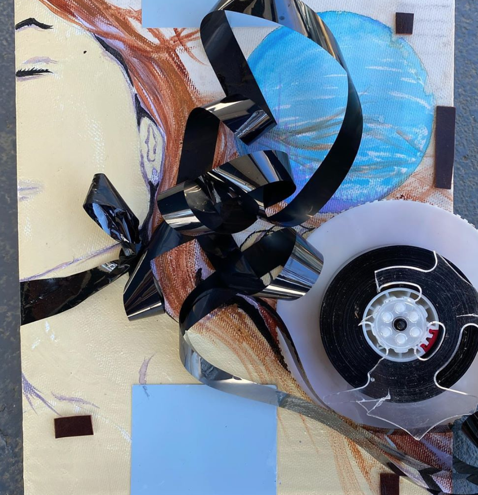
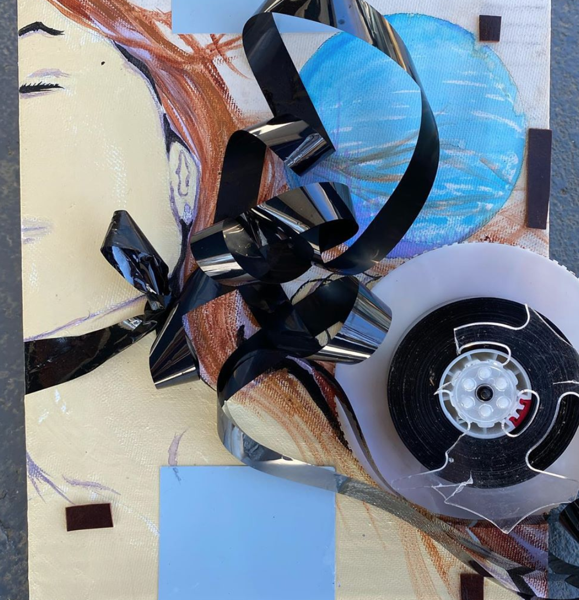
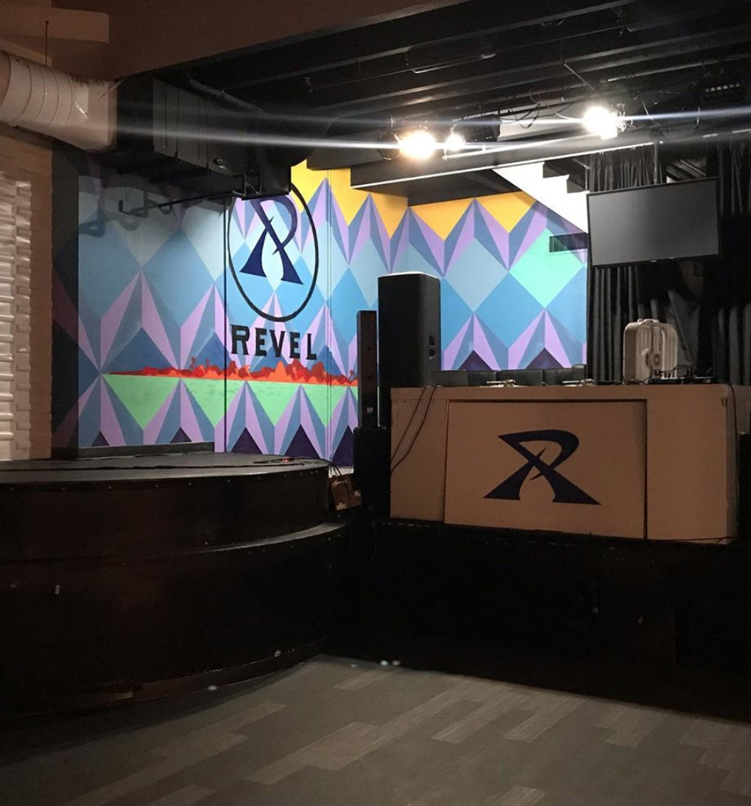
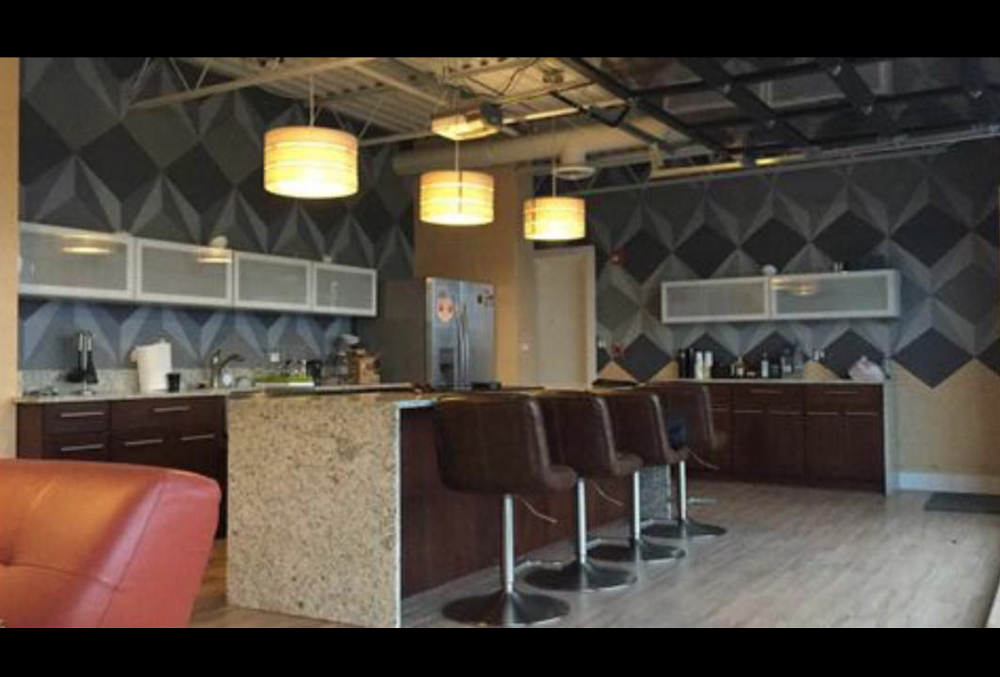
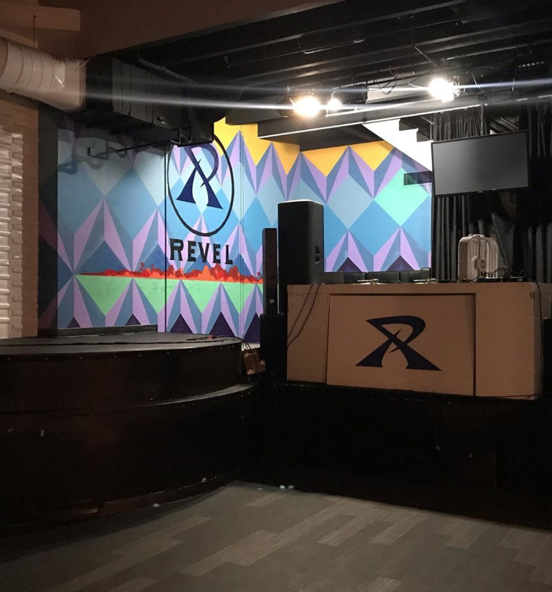
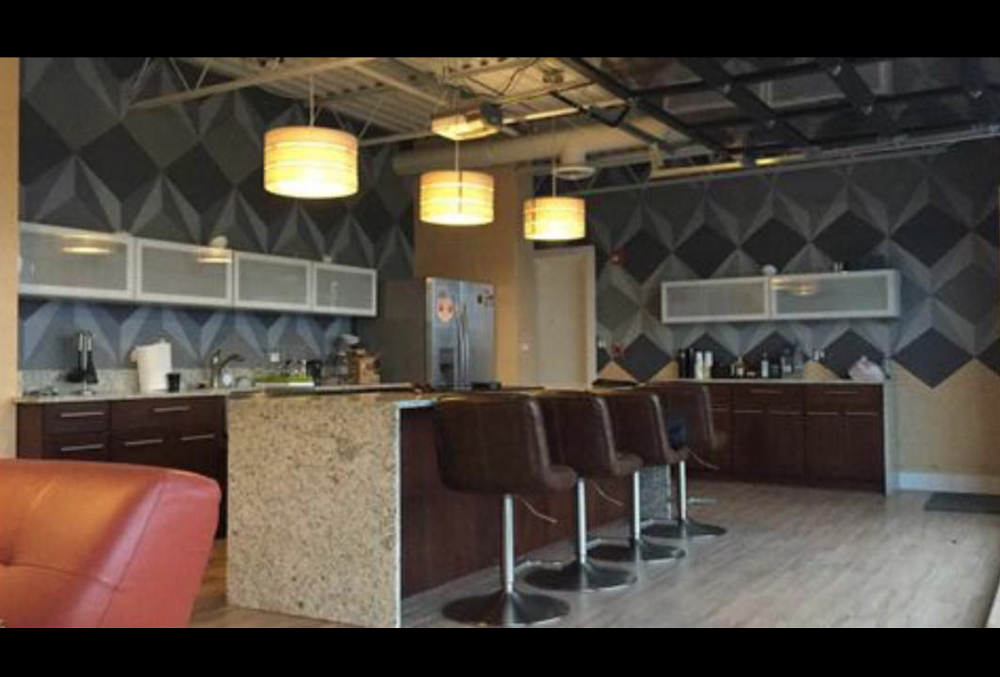

 



Growing up in Los Angeles, but now an Indy native-resident Lucian Agapé, also known as the artist J•Chin,
continues to evolve from a grafitti artist and multi-media artist to a do-it-all creative providing finishing
touches on custom interior designs.
His style remains versatile and engaging while staying true to its urban roots.
His ability to blend vibrant colors, shapes, and varying texture
combinations to an otherwise bleak and boring city landscape remains fluid while also demonstrating a deft
skill that few can harness but many can appreciate.
email@blah.com
telephone number